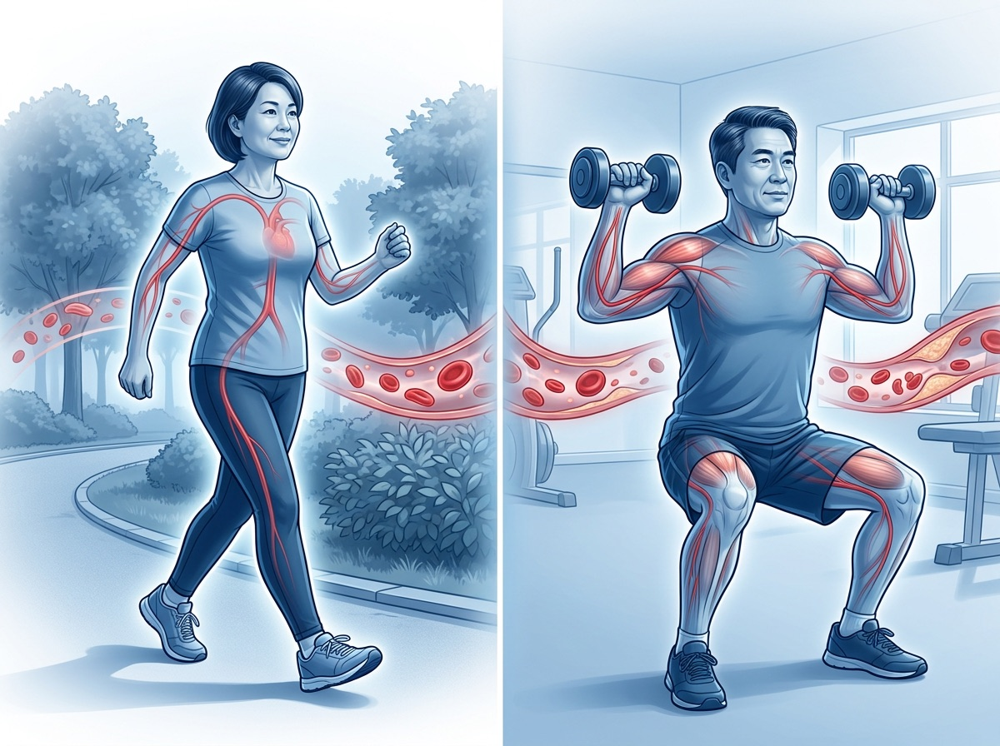

운동만으로 LDL은 조금 내려가지만, 중성지방을 낮추고 좋은 콜레스테롤(HDL)을 올리며 체중·혈압·혈당 관리에 도움이 됩니다. 식이는 핵심만 짧게, 운동 처방은 강도·시간·종목까지 한눈에 정리했습니다.
한눈에 보는 운동 처방 핵심 수치
주당 유산소 운동
150~300
분/주 (중강도 기준)
주당 저항 운동
2+
회/주 (대근육 8~10종목)
운동 전 준비
5
분 워밍업 (가벼운 걷기·관절 가동)
허리둘레 목표
<90/85
cm (남/여)
운동 강도 구간 — 심박수와 힘든 정도 점수 (최대심박수 = 220 − 나이)
강도 분류
최대심박수 %
힘든 정도 점수 (6~20)
50세 예시 심박수
저강도 — 워밍업·회복
57~63%
9~11 (가벼움)
97~107회/분
중강도 — 처방 표준
64~76%
12~13 (다소 힘듦)
109~129회/분
고강도 — 시간 단축·고강도 인터벌
77~95%
14~17 (힘듦)
131~162회/분
중강도 = "숨이 약간 차지만 대화는 가능한 정도"입니다. 50세 최대심박수 추정치 170회/분(220 − 50) 기준입니다.
운동 종목 처방 — 유산소와 저항 운동

유산소 운동 + 저항 운동
유산소 운동 · 주 5회 30분
저항 운동 · 주 2~3회
빠른 걷기 — 1분 100~110걸음, 시속 5~6km
대근육 8~10종목 — 가슴·등·다리·어깨·복부
자전거 — 평지 20~25km/h, 무릎 부담 적음
세트·횟수 — 2~3세트 × 10~15회 (한 번에 들 수 있는 최대 무게의 60~70%)
수영·아쿠아로빅 — 관절염·비만 환자 1순위
휴식 — 세트 사이 60~90초, 종목 사이 2분
가벼운 조깅·등산 — 시속 7~8km, 대화 가능
HDL 상승 효과 — 12주 시 약 4~6% 증가
권장 강도 — "약간 숨차나 대화는 가능"
주의 — 숨 참고 힘주기 금지, 혈압 급상승
식사는 핵심만
포화지방(삼겹살·버터·치즈)을 줄이고, 수용성 식이섬유를 하루 10~25g(최소 10g) 먹고, 주 2~3회 등푸른 생선을 드세요. 술은 중성지방을 빠르게 올립니다. 식단 자세히는 "이상지질혈증 식이요법 가이드"(2쪽 아래 주소)를 참고하세요.
이상지질혈증 가이드 · 주간 스케줄 & 안전 체크리스트
1주일 운동 스케줄과 동반질환별 안전 주의사항
유산소 150분 + 저항 2회를 한 주에 어떻게 나누는지, 운동 전 자가 체크와 동반질환(고혈압·당뇨·관상동맥질환)별 주의사항을 정리했습니다.
1주일 운동 스케줄 예시 — 총 유산소 150분 + 저항 2회
요일
운동 종류
시간 / 강도
핵심 포인트
월요일
유산소 — 빠른 걷기
30분 / 중강도
심박수 109~129
화요일
저항 — 머신 8종목
40분 / 2~3세트
대근육 위주
수요일
유산소 — 자전거 또는 수영
30분 / 중강도
관절 부담↓
목요일
저항 — 머신 8종목 + 코어
40분 / 2~3세트
숨 참고 힘주기 금지
금요일
유산소 — 인터벌 걷기
30분 / 중·고강도
3분 빠르게 / 2분 천천히
토요일
유산소 — 등산 또는 장거리 걷기
30~60분 / 중강도
즐기면서 길게
일요일
회복 — 가벼운 산책 + 스트레칭
20~30분 / 저강도
근육 회복일
운동 전 자가 체크
혈압 측정 — 안정 시 수축기 혈압 180 초과 또는 이완기 혈압 110 초과면 운동 보류
공복 혈당 — 70 이하면 간식 후 운동, 250 이상이면 케톤·증상 확인 후 보류/상담
흉통·호흡곤란 있으면 그날 운동 중단
충분한 수분 — 운동 30분 전 250ml 섭취
신발·복장 — 쿠션 좋은 운동화, 무릎·발목 보호
워밍업 5분 — 가벼운 걷기·관절 가동 후 본운동
즉시 중단 신호
가슴 압박감·통증 — 협심증 의심, 즉시 중단·119
심한 호흡곤란 — 평소보다 과한 숨참, 휴식 후도 지속
어지러움·실신감 — 즉시 앉거나 누워 안정
식은땀·오심 — 저혈당 또는 심혈관 신호
한쪽 마비·말 어눌 — 뇌졸중 의심, 즉시 119
근육 심한 통증·갈색뇨 — 횡문근융해 의심 (스타틴 복용 시)
동반질환별 운동 주의 & 추적 관리
동반질환별 주의
고혈압 — 저항 운동 시 숨 참고 힘주기 금지, 호흡 유지
당뇨 — 운동 전후 혈당 측정, 인슐린 부위 회피
관상동맥질환 — 의사 확인 후 최대심박수 70% 미만으로 시작
스타틴 복용 — 근육통이 생기면 약은 멈추지 말고 병원에 연락, 콜라색 소변·소변량 감소가 함께면 응급실
추적 관리
식사·운동 시작 후 8~12주: 첫 지질검사 — LDL·중성지방·HDL 변화 3~6개월: 운동량·체중·허리둘레 + 약물 조정 이후 6~12개월마다: 지질검사(간수치·CK(근육 효소)는 증상이 있거나 필요할 때) 바로 연락: 근육통 ☏ 031-893-4560 · 가슴 통증·실신은 119·응급실
함께 보기 — 식단 자세히: edu.gwanggyobarun.com/handouts/lifestyle/dyslipidemia-diet/ · 내 LDL 목표: edu.gwanggyobarun.com/handouts/endocrine/ldl-target-by-risk/